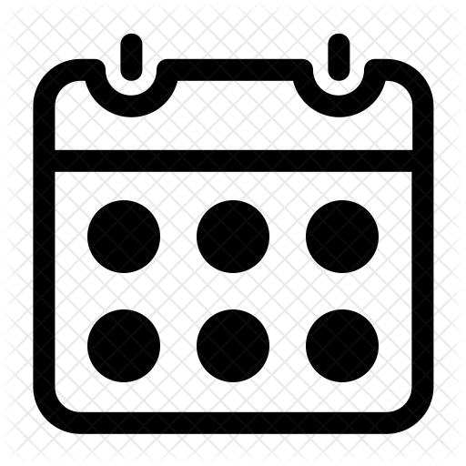
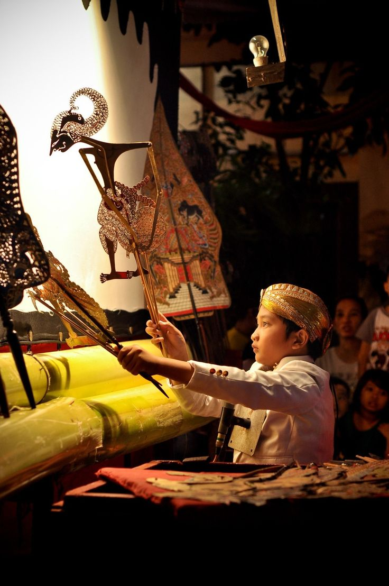
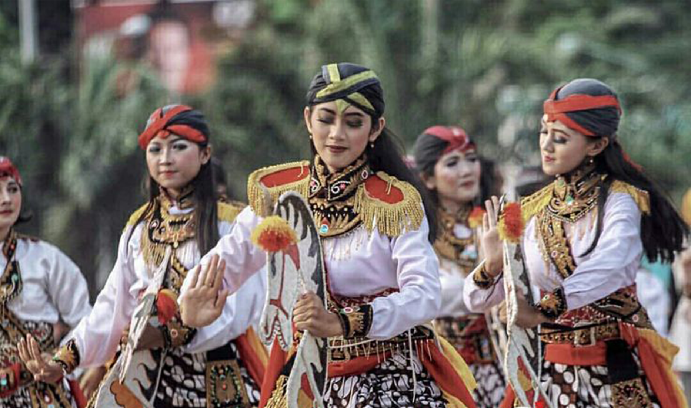
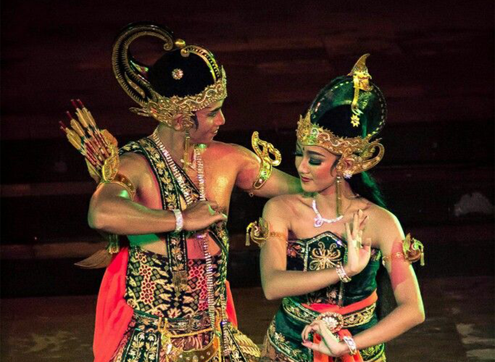
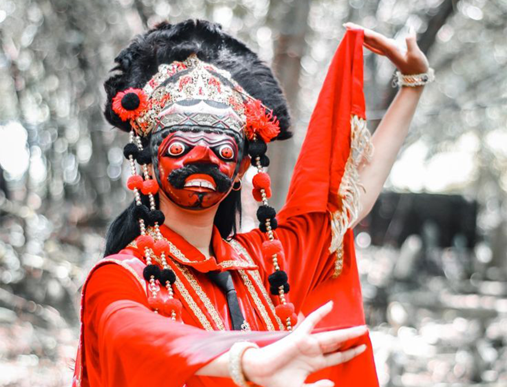

"Gema Barongan Nusantara : Harmoni Kekuatan dan Budaya"
Festival seni tradisional yang menampilkan pertunjukan Barongan, warisan budaya dari Jawa Timur yang penuh energi dan makna.
Taman Budaya Jawa Timur

15 November 2024
IDR 50.000

"Kaleidoskop Cerita: Festival Wayang Kulit Anak di Yogyakarta"
Saksikan keajaiban seni pertunjukan dalam Festival Wayang Kulit Anak di Taman Budaya Yogyakarta, menampilkan cerita dan karakter ikonik
Taman Budaya Yogyakarta
20 Desember 2024
Gratis

"Harmoni Gerak: Festival Tari Jaran Kepang Wanita Yogyakarta"
Pertunjukan seni tari Jaran Kepang yang mengedepankan keanggunan dan kekuatan penari wanita, mencerminkan budaya lokal Yogyakarta yang kaya. Dengan kostum yang indah dan gerakan yang dinamis, acara ini menjadi wadah untuk mengekspresikan seni tradisional yang telah diwariskan secara turun-temurun.
Pendopo Agung UGM, Yogyakarta
20 November 2024
IDR 80.000

"Pesona Abadi: Pertunjukan Tari Ramayana di Prambanan"
Keindahan Tari Ramayana yang diadakan di Candi Prambanan, menggambarkan kisah epik Ramayana dengan gerakan anggun dan kostum yang memukau, menjadi wujud warisan budaya Indonesia yang kaya. Pertunjukan ini mengajak penonton merasakan kedalaman cerita dan nilai-nilai yang terkandung dalam kisah klasik tersebut.
Candi Prambanan, Yogyakarta
12 Januari 2025
Gratis

"Langkah Kelana: Dinamika Topeng Kelana dari Cirebon"
Menampilkan kisah ambisi dan perjuangan seorang raja yang penuh emosi. Setiap gerakan tarian ini mencerminkan kompleksitas karakter yang ditampilkan dengan topeng yang menjadi ikon dari budaya Cirebon.
Gedung Kesenian Cirebon
20 Januari 2025
IDR 50.000
"Ritual Nyepi: Sehari dalam Keheningan dan Refleksi di Bali"
Perayaan Tahun Baru Saka di Bali yang dirayakan dengan hari penuh keheningan, tanpa aktivitas, dan bertujuan untuk membersihkan jiwa serta alam melalui refleksi dan introspeksi spiritual.